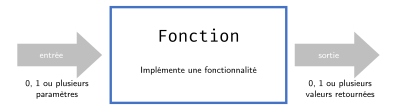
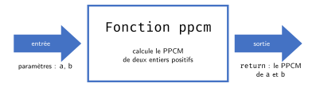

a, b = 4, 6
x = 1
while not (x % a == 0 and x % b == 0):
x = x + 1
p1 = x
c, d = 10, 15
# les lignes 2 à 4, recopiées en renommant a, b en c, d :
x = 1
while not (x % c == 0 and x % d == 0):
x = x + 1
p2 = x
print(p1 + p2)42Cours 3
Reprenons le calcul du PPCM : et si on voulait additionner deux PPCMs ?
a, b = 4, 6
x = 1
while not (x % a == 0 and x % b == 0):
x = x + 1
p1 = x
c, d = 10, 15
# les lignes 2 à 4, recopiées en renommant a, b en c, d :
x = 1
while not (x % c == 0 and x % d == 0):
x = x + 1
p2 = x
print(p1 + p2)42Le problème. Le même calcul est écrit deux fois, car il faut les deux résultats à la fois. On aimerait l’écrire une seule fois et l’appeler à volonté : c’est le rôle d’une fonction.

La fonction cache les détails de l’implémentation : le code est plus sûr et plus facile à débugger. On interagit avec elle en l’appelant, en lui fournissant des données en entrée et en récupérant des données en sortie.
Le code de la fonction est écrit une seule fois, mais peut être appelé autant de fois qu’on veut.
La fonction ppcm du début du cours, vue de l’extérieur :

On déclare une fonction par l’instruction def, suivie du nom de la fonction, puis des paramètres, et finalement de deux points.
Le corps de la fonction doit suivre : c’est un bloc de code indenté.
Le corps peut contenir une ou plusieurs instructions return. Ces instructions terminent l’exécution de la fonction et retournent un objet.
Remarque. Une fonction peut prendre zéro paramètre.
Une fois qu’une fonction a été définie, nous pouvons l’appeler. L’appel doit toujours avoir lieu après la définition.
Pour appeler une fonction : le nom de la fonction suivi, entre parenthèses, d’un argument pour chaque paramètre.
def ppcm(a, b):
x = 1
while not (x % a == 0 and x % b == 0):
x = x + 1
return x
p1 = ppcm(4, 6)
p2 = ppcm(10, 15)
print(p1 + p2)42Dès qu’un return est exécuté, le programme quitte la fonction, et la partie de l’expression qui représente l’appel est remplacée par la valeur retournée par cet appel.
Si aucune instruction return n’est exécutée, la fonction retourne l’objet None.
def prix_ttc(prix, taux):
tva = prix * taux / 100
return prix + tva
total = 40 + 20 + 10
print(prix_ttc(total, 8.1), 'CHF')75.67 CHFUn autre exemple :
def fonction(flag, x):
if flag:
return x + 4
return x - 2
a = 6
b = 3 * fonction(True, 4) + a
print(b)30Remarque. L’expression fonction(True, 4) est remplacée par l’objet 8, et le reste de la ligne s’évalue ensuite normalement : b = 3 * 8 + 6.
Les fonctions interrompent le flux normal du programme :
None si rien n’a été renvoyé).Si l’instruction return x, y est exécutée, les deux objets sont packés en un tuple, comme au Cours 2 : la fonction retourne le tuple (x, y), et l’affectation a, b = fonction(...) le unpack en deux variables. De même, une fonction peut retourner n’importe quel nombre d’objets.
def min_max(t):
return min(t), max(t)
mesures = (7, 2, 9)
a, b = min_max(mesures)
print(a, b)2 9Vu comme un flux d’exécution :
return pack les deux objets en un tuple ;a vaut 2 et b vaut 9.Remarque. L’expression min_max(mesures) est remplacée par le tuple (2, 9), et la ligne s’évalue ensuite comme a, b = (2, 9).
Remarque. Ce tuple peut être récupéré tel quel, avec t = fonction(...), ou unpacké aussitôt dans l’affectation, avec a, b = fonction(...) : c’est exactement l’unpacking vu au Cours 2.
Devant n’importe quel appel de fonction, on peut se poser deux questions :
Les deux réponses sont indépendantes : print fait beaucoup mais ne retourne rien.
def fonction(x, y):
somme = x + y
print('Je vais retourner la somme')
return somme
resultat = fonction(3, 4)
print(resultat)Je vais retourner la somme
7Il est possible de spécifier une valeur par défaut pour certains paramètres, qui sont donc optionnels.
Les paramètres optionnels doivent être spécifiés après les paramètres obligatoires dans la définition de la fonction.
Lors de l’appel, si aucun argument n’est fourni pour un paramètre optionnel, la valeur par défaut est utilisée.
def saluer(nom = 'toi'):
print('salut', nom, '!')
saluer('Sam')
saluer()salut Sam !
salut toi !def laBise(pers1, pers2, n = 3):
print(pers1, 'et', pers2, 'se font la bise!')
print('mwah ' * n)
laBise('Bernard', 'Bianca')Bernard et Bianca se font la bise!
mwah mwah mwah print permet au programme d’afficher des informations à l’écran.
On lui donne un ou plusieurs objets, séparés par des virgules,
elle affiche le str associé à chacun d’eux, séparés par un espace,
print('Le résultat est', 42)Le résultat est 42x = 7
print('x vaut', x, 'et son type est', type(x))x vaut 7 et son type est <class 'int'>elle retourne l’objet None.
Remarque. Nous utilisons print depuis le Cours 1 sans jamais dire ce qu’elle est. C’est une fonction, et elle illustre que les fonctions ne se limitent pas à ce qu’elles retournent : elles peuvent faire quelque chose avant.
Pour les détails sur son utilisation (\n, end, sep, f-strings), voir cette page.
Remarque. Écrire sep = '-' dans l’appel, c’est lier un argument à un paramètre par son nom. Voir cette page sur les arguments nommés.
En fait, print peut accepter plusieurs types car elle exploite le casting.
print("Ocean's", 5*5-7-7)Ocean's 11print applique (en interne) str sur tout objet qu’on lui donne. Donc si un objet peut être casté en str, print peut l’afficher !
Nous venons de voir que la fonction print admet deux paramètres optionnels : end et sep.
sep est une chaîne de caractères insérée entre les arguments passés à print : par défaut, un espace ' '.
end est une chaîne de caractères ajoutée après le dernier argument : par défaut, un retour à la ligne '\n'. C’est donc end qui fait que chaque print commence une nouvelle ligne.
print('chou', 'fleur')
print('chou', 'fleur', end = '!')
print('chou', 'fleur', sep = '-')
print('chou', 'fleur', sep = '-', end = ':)')chou fleur
chou fleur!chou-fleur
chou-fleur:)Remarque. La fonction print est un exemple assez spécial, car il faut explicitement nommer end et sep dans l’appel.
Nous venons de voir que print accepte autant d’objets qu’on veut. On peut écrire nos propres fonctions ainsi, en mettant l’opérateur * devant le dernier paramètre.
Python pack alors tous les arguments restants dans un tuple, que la fonction manipule comme n’importe quel autre : len, indexage, boucle for…
def saluer(*personnes):
if len(personnes) == 0:
print("Personne à saluer !")
elif len(personnes) == 1:
print("Bonjour", personnes[0], "!")
else:
print("Bonjour à tous les", len(personnes), "amis !")
saluer()
saluer("Leonard")
saluer("Leonard", "Ghid", "Sam")Personne à saluer !
Bonjour Leonard !
Bonjour à tous les 3 amis !Quand une fonction utilise *args, tous les paramètres qui suivent doivent être liés à des arguments nommés.
def moyenne(*nombres, afficher = False):
if len(nombres) == 0:
return None
m = sum(nombres) / len(nombres)
if afficher:
print('Moyenne de', nombres, '=', m)
return m
x = moyenne(10, 20, 30)
y = moyenne(5, 15, 25, afficher = True)
z = moyenne(5, 15, 25, True) # erreur silencieuse !
print('x =', x, 'y =', y, 'z =', z)Moyenne de (5, 15, 25) = 15.0
x = 20.0 y = 15.0 z = 11.5Important. Cette règle évite l’ambiguïté : sinon Python ne peut pas savoir si un argument fait partie du tuple *args ou s’il correspond à un paramètre suivant. Voir à nouveau la page sur les arguments nommés pour une explication détaillée et un exemple.
Lorsqu’une variable est créée dans un programme Python, les portions du programme qui peuvent y accéder sont la portée de cette variable.
La portée d’une variable dépend de l’endroit du code où elle est définie.
Une variable définie dans une fonction est dite locale (à cette fonction).
Une variable définie à l’extérieur de toute fonction est dite globale.
Les règles pour déterminer la portée d’une variable sont les suivantes.
Une variable locale à une fonction n’est pas accessible hors de cette fonction.
def fonction():
v = 3
print("Dans la fonction, v vaut", v)
fonction()
print("À l'extérieur de la fonction, v vaut", v)Dans la fonction, v vaut 3--------------------------------------------------------------------------- NameError Traceback (most recent call last) Cell In[15], line 6 3 print("Dans la fonction, v vaut", v) 5 fonction() ----> 6 print("À l'extérieur de la fonction, v vaut", v) NameError: name 'v' is not defined
Règle II. Une variable globale est accessible à l’intérieur d’une fonction.
def fonction():
print("Dans la fonction, v vaut", v)
v = 43
fonction()Dans la fonction, v vaut 43Attention. Si on essaye de réaffecter une variable globale dans une fonction, Python va créer une variable locale qui a le même nom.
def fonction():
v = 2
print("Dans la fonction, v vaut", v)
v = 43
print("Avant l'appel, v vaut", v)
fonction()
print("Après l'appel, v vaut", v)Avant l'appel, v vaut 43
Dans la fonction, v vaut 2
Après l'appel, v vaut 43On peut imaginer que chaque fonction garde un registre des variables qui sont définies dans la portée de cette fonction.
x, l’interpréteur Python va d’abord vérifier si cette variable est présente dans le registre local de cette fonction.x dans ce registre.Remarque. On peut afficher ces registres local et global avec les fonctions locals et globals.
Si, dans une fonction, on veut pouvoir réaffecter une variable définie globalement, il faut la déclarer comme globale dans la fonction, avant de l’affecter.
variable = expression
def fonction():
global variable
variable = nouvelle_expressionCeci indiquera à l’interpréteur Python de ne pas enregistrer cette variable dans le registre local à la fonction, mais de toujours consulter le registre global pour accéder à l’objet référencé par cette variable.
def fonction():
global v
v = 5
print('dans f, v vaut', v)
v = 3
print('avant f, v vaut', v)
fonction()
print('après f, v vaut', v)avant f, v vaut 3
dans f, v vaut 5
après f, v vaut 5Remarque. Dans l’autre ordre, Python renvoie une erreur.
def fonction():
v = 5
global vCell In[19], line 3 global v ^ SyntaxError: name 'v' is assigned to before global declaration
Les fonctions doivent être définies à un endroit accessible par Python. Elles peuvent être :
print, max, abs) ;mes_fonctions.py) ;random.randint, math.sqrt) ;Il existe différentes manières d’importer une fonction d’un module :
| Méthode d’import | Appel |
|---|---|
from module_name import fonction |
fonction() |
from module_name import * |
fonction() |
import module_name |
module_name.fonction() |
import module_name as alias |
alias.fonction() |
from math import sqrt
x = 9
print('La racine carrée de', x, 'vaut', sqrt(x))La racine carrée de 9 vaut 3.0from random import *
print('Voici un nombre aléatoire :', randint(0, 10))Voici un nombre aléatoire : 5import math
print('cos(pi) =', math.cos(math.pi))cos(pi) = -1.0import math as m
print('cos(pi) =', m.cos(m.pi))cos(pi) = -1.0Remarque. La deuxième méthode est la moins recommandée, car elle risque d’effacer des fonctions locales.
Voici quelques modules classiques :
| Module | Description |
|---|---|
math |
Fonctions mathématiques (sin, sqrt, pi) |
random |
Génération de nombres aléatoires |
time |
Fonctions liées au temps |
os |
Interaction avec le système d’exploitation |
sys |
Interaction avec l’interpréteur Python |
Remarque. Liste complète : docs.python.org/3/py-modindex.html
Écrivons un programme qui génère deux points aléatoires sur la grille de coordonnées entières, puis calcule la distance entre ces deux points.
random nous donne les coordonnées, math nous donne la racine carrée ;
une fonction distance isole le calcul, et le reste du programme s’occupe de l’affichage.
import math
import random
def distance(x1, y1, x2, y2):
"Retourne la distance entre deux points"
return math.sqrt((x2-x1)**2 + (y2-y1)**2)
# Générer deux points aléatoires
x1, y1 = random.randint(0, 8), random.randint(0, 4)
x2, y2 = random.randint(0, 8), random.randint(0, 4)
# Afficher les 2 points et leur distance
print('Point 1: (', x1, ', ', y1, ')', sep='')
print('Point 2: (', x2, ', ', y2, ')', sep='')
dist = distance(x1, y1, x2, y2)
print('Distance: ', dist)Point 1: (5, 2)
Point 2: (1, 4)
Distance: 4.47213595499958Le même flux, quand le corps d’une fonction appelle lui-même une fonction. Le volume d’un cylindre, par exemple, se calcule à partir de l’aire de son disque de base.
def aire_cercle(r):
aire = 3.14 * r**2
return aire
def vol_cylindre(r, h):
base = aire_cercle(r)
return base * h
print(vol_cylindre(3, 10), 'cm3')282.6 cm3vol_cylindre(3, 10) entre dans le corps de vol_cylindre ;aire_cercle ;return remplace l’appel intérieur, donc base vaut 28.26 ;return de vol_cylindre remplace enfin l’appel extérieur.Écrivons un programme qui…
On nous donne la fonction qui nomme un chiffre : un tuple retient les neuf adjectifs, qu’on récupère par indexage.
def adjectif_numéral(i):
noms = ('un', 'deux', 'trois', 'quatre', 'cinq',
'six', 'sept', 'huit', 'neuf')
return noms[i-1]Il ne reste qu’à écrire afficher_numéraux_sans_voyelles :
Une boucle parcourt les entiers de 1 à n, une autre parcourt les caractères de chaque adjectif.
Un if ne laisse passer que les consonnes.
def afficher_numéraux_sans_voyelles(n):
if not (type(n) == int and 0 < n < 10):
print('Erreur: n doit être un entier entre 1 et 9 inclus')
return False
for i in range(1, n+1):
s = adjectif_numéral(i)
for c in s:
if c not in 'aeiou':
print(c, end='')
print()
afficher_numéraux_sans_voyelles(7)n
dx
trs
qtr
cnq
sx
sptRappel. Le mot-clé in peut également être utilisé pour créer des conditions booléennes.